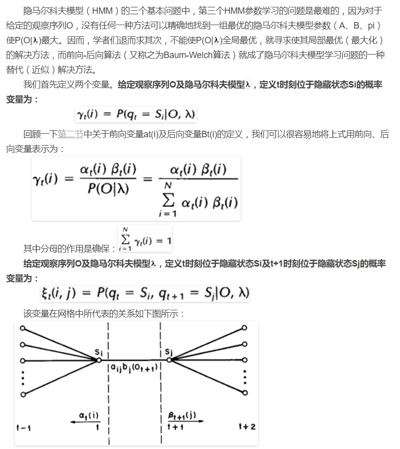

1.简介
隐马尔克夫模型可以用两组状态集合和三组概率集合来描述：
(1) 隐藏状态: 隐藏在观察状态后的状态
(2) 观察状态: 表象看到的状态
(3) 初始概率集合: 包含了隐状态在t=1时刻的初始选择概率
(4) 状态转移矩阵: 包含了隐藏状态到另一个隐藏状态的概率
(5) 混淆矩阵: 包含了隐马尔克夫模型的某一个隐藏状态观察到某个观察状态的概率。
● HMM有一个最重要也是非常不符合实际的假设：以上各种概率不随时间的迁移而改变。
● 因此一个HMM是在一个马尔克夫过程中引入一组隐藏状态以及与其相关的观察状态的概率关系。
2.定义
一个HMM是一个三元组(pi, A, B)。
其中xij表示j时刻的隐藏状态为xi, i ∈ {1…n}, n为隐藏状态的书目。
Pr(yi | xj)表示在隐藏状态xj下观察到观察状态yi的概率。
3.应用
一旦一个系统可以作为HMM来描述，就可以解决三个基本问题：
(1) 评估
问题描述: 这种情况知道一些(pi, A, B)的HMM模型，对于给定的观察状态序列，计算最有可能产生该序列的HMM。即计算HMM产生观察序列的概率。
解决方法: 前向算法(forward algorithm)
算法描述:
(2) 解码
问题描述: 这种情况知道观察序列以及对应的HMM模型，计算与观察序列对应的最有可能的隐藏序列。
解决方法: Viterbi算法
算法描述:
(3) 学习
问题描述: 根据一个观察序列（来自于已知的集合），以及与其有关的一个隐藏状态集，估计一个最合适的隐马尔科夫模型（HMM），也就是确定对已知序列描述的最合适的（pi,A,B）三元组。
解决方法: 前向-后向算法
算法描述:
a.后向算法
b.前向后向算法
